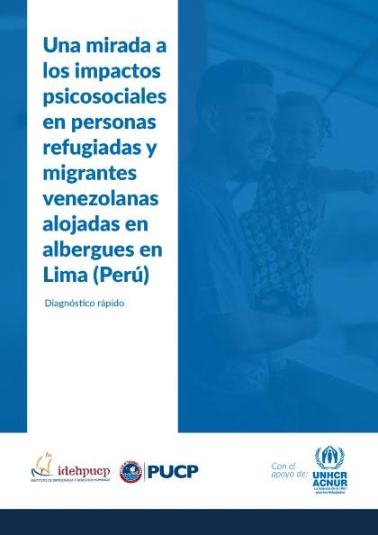
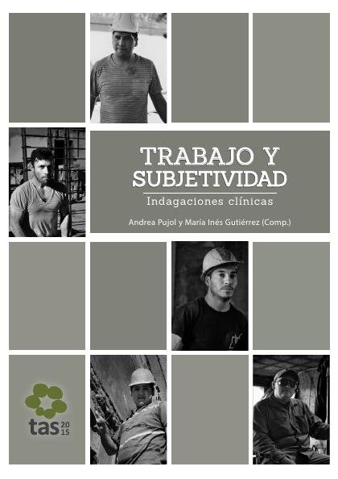
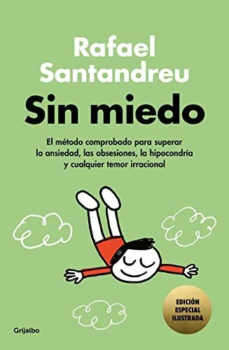

Libros de psicología clínica y psicopatología
Libros de psicología clínica y psicopatología en español: 54 libros completos para leer gratis aquí mismo y 10 fichas de títulos actuales.
Prevención del suicidioPsicología clínicaEvaluación clínicaTrastorno obsesivo-compulsivoDiagnóstico psicológicoAdiccionesPsicopatología descriptivaDepresiónTrastornos de ansiedadTrastornos del sueñoComorbilidad psicológicaTrastornos de personalidadTrastornos psicóticosFormulación de casosDiagnóstico diferencialEntrevista clínicaTrastorno bipolarTrastornos del neurodesarrolloTrastornos alimentariosTrastornos disociativosTrastornos somáticosTrastorno de estrés postraumático
Conducta suicida. Manual de prevención en personas mayores que viven en residenciasSales Galán, Alicia; Redondo Flores, Rita; Pinazo Clapés, Carolina; Checa Esquiva, Irene
Conducta suicida. Manual de prevención en personas mayores que viven en residenciasSales Galán, Alicia; Redondo Flores, Rita; Pinazo Clapés, Carolina; Checa Esquiva, IreneEstigma, autoestigma y sesgos clínicos en el proceso de evaluación psicológicaSánchez, Alberto; Kulisevsky, Elena; Martín-Pozuelo Martín, Mónica; Monfort, Jaume; Planellas, Irina
Estigma, autoestigma y sesgos clínicos en el proceso de evaluación psicológicaSánchez, Alberto; Kulisevsky, Elena; Martín-Pozuelo Martín, Mónica; Monfort, Jaume; Planellas, IrinaMi vida junto al TOC y la ansiedad socialDarío Gustavo Fioramonti
Mi vida junto al TOC y la ansiedad socialDarío Gustavo FioramontiSíntomas psicóticos en el adulto mayor: definiciones, epidemiología, diagnóstico y tratamientoRentería Daboin, Johny Alexander; Urrea Vargas, Maria Juliana
Síntomas psicóticos en el adulto mayor: definiciones, epidemiología, diagnóstico y tratamientoRentería Daboin, Johny Alexander; Urrea Vargas, Maria JulianaAvanza joven: estudio, diagnóstico y propuesta de intervención socioeducativa en casos de violencia filioparental en Castilla y LeónCuéllar Cachazo, Paloma; Serrate González, Sara; Muñoz Rodríguez, José Manuel; Rojo Brezmes, José Andrés; Huete García, Agustín; Caballero Julia, Daniel
Avanza joven: estudio, diagnóstico y propuesta de intervención socioeducativa en casos de violencia filioparental en Castilla y LeónCuéllar Cachazo, Paloma; Serrate González, Sara; Muñoz Rodríguez, José Manuel; Rojo Brezmes, José Andrés; Huete García, Agustín; Caballero Julia, DanielDebates sobre psicopatología, estructuras clínicas y conexiones. Vol. 4Escobar Puche, Alexandra; Gallego Buriticá, Andrés Felipe; Guerrero Bravo, Carlos Andrés; Roldán Cardona, Carolina María; Osorio Cossio, Hérmes; Atxa Estalalayo, June; Vargas García, Kelly Yohana; Ceb
Debates sobre psicopatología, estructuras clínicas y conexiones. Vol. 4Escobar Puche, Alexandra; Gallego Buriticá, Andrés Felipe; Guerrero Bravo, Carlos Andrés; Roldán Cardona, Carolina María; Osorio Cossio, Hérmes; Atxa Estalalayo, June; Vargas García, Kelly Yohana; CebProgramas socioeducativos de prevención de conductas de riesgo y adicciones. Aproximación a los estándares de calidadIllanes Segura, Rocío; Helena Quintas
Programas socioeducativos de prevención de conductas de riesgo y adicciones. Aproximación a los estándares de calidadIllanes Segura, Rocío; Helena QuintasPrevención del suicidio: un recurso para profesionales de los medios de comunicación. Actualización del 2023
Prevención del suicidio: un recurso para profesionales de los medios de comunicación. Actualización del 2023Síndromes clínicos 2.0Daniel Eduardo Aimone
Síndromes clínicos 2.0Daniel Eduardo AimoneSíntesis Integradora de la Personalidad y sus Trastornos: Síntesis integradora de las dimensiones básicas [2023]Ruiz Rodríguez, José
Síntesis Integradora de la Personalidad y sus Trastornos: Síntesis integradora de las dimensiones básicas [2023]Ruiz Rodríguez, JoséDebates sobre psicopatología y estructuras clínicas. Vol. 2Gómez Vargas, Maricelly; Heredia Quintana, Diego Armando; Franco Amaris, Laura Isabel; Betancur Jaramillo, Alejandra; Vargas García, Kelly Johana; Chacón Afanador, Jorge Enrique; Restrepo Zuleta, Edwi
Debates sobre psicopatología y estructuras clínicas. Vol. 2Gómez Vargas, Maricelly; Heredia Quintana, Diego Armando; Franco Amaris, Laura Isabel; Betancur Jaramillo, Alejandra; Vargas García, Kelly Johana; Chacón Afanador, Jorge Enrique; Restrepo Zuleta, EdwiEl bumerán de la violencia y las adicciones
El bumerán de la violencia y las adiccionesProtocolo de detección implícita de violencia de género en mujeres con adicciones (DIVG-MA-UNAD)Picado Valverde, Eva María; Guzmán Ordaz, Raquel; Yurrebaso Macho, Amaia; García Valverde, Esther; Antón Rubio, María Concepción; Álamo Gómez, Nuria María del; Torres García, Ana Victoria; Sanz Mulas,
Protocolo de detección implícita de violencia de género en mujeres con adicciones (DIVG-MA-UNAD)Picado Valverde, Eva María; Guzmán Ordaz, Raquel; Yurrebaso Macho, Amaia; García Valverde, Esther; Antón Rubio, María Concepción; Álamo Gómez, Nuria María del; Torres García, Ana Victoria; Sanz Mulas,Seminario de psicología médica: la ansiedadGarcía Arroyo, José Manuel
Seminario de psicología médica: la ansiedadGarcía Arroyo, José ManuelTerapia interpersonal grupal para la depresión
Terapia interpersonal grupal para la depresiónVivir sin recaídasPedro Rafael Gargoloff, María Delia Michat y otros
Vivir sin recaídasPedro Rafael Gargoloff, María Delia Michat y otrosFormulación y tratamiento psicológico en el siglo XXIFrancisco José Eiroa-Orosa, María José Fernández Gómez, Rubén Nieto y otros
Formulación y tratamiento psicológico en el siglo XXIFrancisco José Eiroa-Orosa, María José Fernández Gómez, Rubén Nieto y otrosIntervención bio-psico-social en adiccionesMartín Herrero, José Antonio
Intervención bio-psico-social en adiccionesMartín Herrero, José AntonioDebates sobre psicopatología y estructuras clínicas. Vol. 1Garcés Giraldo, Paula Andrea; Tamayo Lopera, Daniela; Galeano Arias, Felipe; Gómez Vargas, Maricelly; Marín Valencia, Alejandro; Hoyos Arcila, Kelly J.; Jiménez Marín, Eliana Gisell
Debates sobre psicopatología y estructuras clínicas. Vol. 1Garcés Giraldo, Paula Andrea; Tamayo Lopera, Daniela; Galeano Arias, Felipe; Gómez Vargas, Maricelly; Marín Valencia, Alejandro; Hoyos Arcila, Kelly J.; Jiménez Marín, Eliana GisellImaginarios de los trastornos mentales en las seriesMartínez-Lucena, Jorge; Cambra Badii, Irene; de Felipe Allué, Fernando; GÓMEZ GARCÍA, IVÁN; Guerra, Nazareno; Guilera Domingo, Clara; Lopera Mármol, Marta; MASTANDREA, PAULA BELÉN; Paragis, María Paul
Imaginarios de los trastornos mentales en las seriesMartínez-Lucena, Jorge; Cambra Badii, Irene; de Felipe Allué, Fernando; GÓMEZ GARCÍA, IVÁN; Guerra, Nazareno; Guilera Domingo, Clara; Lopera Mármol, Marta; MASTANDREA, PAULA BELÉN; Paragis, María PaulPrácticas de PS1034: Evaluación e Intervención ClínicaQuero, Soledad; Díaz-García, Amanda; López-Montoyo, Alba; Bretón-López, Juana; Serrano-Zárate, Berenice; Díaz-García, Amanda; Botella, Cristina
Prácticas de PS1034: Evaluación e Intervención ClínicaQuero, Soledad; Díaz-García, Amanda; López-Montoyo, Alba; Bretón-López, Juana; Serrano-Zárate, Berenice; Díaz-García, Amanda; Botella, CristinaAportes interdisciplinarios en PsicopatologíaJulieta De Battista y otros
Aportes interdisciplinarios en PsicopatologíaJulieta De Battista y otrosEvaluación en psicología clínica de adultosJoan Deus, Josep Deví Bastida, Susanna Jofre y otros
Evaluación en psicología clínica de adultosJoan Deus, Josep Deví Bastida, Susanna Jofre y otrosUna mirada a los impactos psicosociales en personas refugiadas y migrantes venezolanas alojadas en albergues en Lima (Perú). Diagnóstico rápido.Blouin, Cécile; Jave, Iris; Goncalves de Freitas, Maribel
Una mirada a los impactos psicosociales en personas refugiadas y migrantes venezolanas alojadas en albergues en Lima (Perú). Diagnóstico rápido.Blouin, Cécile; Jave, Iris; Goncalves de Freitas, Maribel
El proceso emocional tras el diagnóstico por VIHSalmerón Sánchez, Pedro
El proceso emocional tras el diagnóstico por VIHSalmerón Sánchez, PedroIntroducción a la lingüística clínica : aproximaciones a los trastornos de la comunicaciónCastro Torres, John A.
Introducción a la lingüística clínica : aproximaciones a los trastornos de la comunicaciónCastro Torres, John A.Diágnóstico y orientaciones para la intervención educativa en las dificultades del cálculo: marco teórico. Unidad 5 [Recurso Educativo]Sánchez García, Ana Belén
Diágnóstico y orientaciones para la intervención educativa en las dificultades del cálculo: marco teórico. Unidad 5 [Recurso Educativo]Sánchez García, Ana BelénConversaciones libres con los niños : el método clínico piagetiano. Relación entre teoría y métodoParrat-Dayan, Silvia
Conversaciones libres con los niños : el método clínico piagetiano. Relación entre teoría y métodoParrat-Dayan, SilviaMemorias en movimiento: testimonios corporales sobre el diagnóstico del "trastorno bipolar"Campo Aráuz, Ana Lorena
Memorias en movimiento: testimonios corporales sobre el diagnóstico del "trastorno bipolar"Campo Aráuz, Ana LorenaTrabajo y subjetividad: indagaciones clínicas
Trabajo y subjetividad: indagaciones clínicas
Déficits de atención y trastornos de conductaGemma Alsina Masmitjà, Carme Saumell Mir, Àngels Arroyo Rodríguez y otros
Déficits de atención y trastornos de conductaGemma Alsina Masmitjà, Carme Saumell Mir, Àngels Arroyo Rodríguez y otrosEscala de Depresión Geriátrica GDS de YesavageBlanco Molina, Mauricio; Salazar Villanea, Mónica
Escala de Depresión Geriátrica GDS de YesavageBlanco Molina, Mauricio; Salazar Villanea, MónicaUso y riesgo de adicciones a las nuevas tecnologías entre adolescentes y jóvenes andalucesOliva Delgado, Alfredo; Hidalgo García, María Victoria; Moreno Rodríguez, María del Carmen; Jiménez García, Lucía; Jiménez Iglesias, Antonia María; Antolín Suárez, Lucía; Ramos Valverde, Pilar
Uso y riesgo de adicciones a las nuevas tecnologías entre adolescentes y jóvenes andalucesOliva Delgado, Alfredo; Hidalgo García, María Victoria; Moreno Rodríguez, María del Carmen; Jiménez García, Lucía; Jiménez Iglesias, Antonia María; Antolín Suárez, Lucía; Ramos Valverde, PilarTópicos de Actualización en Neurobiologia III: Excitotoxicidad y Cognición en Enfermedades Neurogenerativas: Aspectos Básicos, Clínicos y Sociales, Memorias ElectrónicasBeas Zárate, Carlos; Ureña Guerrero, Mónica Elisa; Rivera Cervantes, Martha C.; Pallàs i Llibería, Mercè, 1964-; Camins Espuny, Antoni
Tópicos de Actualización en Neurobiologia III: Excitotoxicidad y Cognición en Enfermedades Neurogenerativas: Aspectos Básicos, Clínicos y Sociales, Memorias ElectrónicasBeas Zárate, Carlos; Ureña Guerrero, Mónica Elisa; Rivera Cervantes, Martha C.; Pallàs i Llibería, Mercè, 1964-; Camins Espuny, AntoniLos desórdenes de la conducta alimentaria : anorexia y bulimiaZusman Tinman, Lillyana
Los desórdenes de la conducta alimentaria : anorexia y bulimiaZusman Tinman, LillyanaMaltrato infantil : teoría y clínica psicoanalíticaGallo, Héctor
Maltrato infantil : teoría y clínica psicoanalíticaGallo, HéctorUn niño con autismo en la familia: guía básica para familias que han recibido un diagnóstico de autismo para su hijo o hijaBohórquez Ballesteros, Diana Milena; Alonso Peña, José Ramón; Canal Bedia, Ricardo; Martín Cilleros, María Victoria; García Primo, Patricia; Guisuraga Fernández, Zoila; Martínez Conejo, Amelia; Herráe
Un niño con autismo en la familia: guía básica para familias que han recibido un diagnóstico de autismo para su hijo o hijaBohórquez Ballesteros, Diana Milena; Alonso Peña, José Ramón; Canal Bedia, Ricardo; Martín Cilleros, María Victoria; García Primo, Patricia; Guisuraga Fernández, Zoila; Martínez Conejo, Amelia; HerráeAbordaje clínico de las adicciones sin sustanciaRomero Velázquez, Miriam
Abordaje clínico de las adicciones sin sustanciaRomero Velázquez, MiriamDinámica familiar en adolescentes con trastornos de la conducta alimentaria: una revisión bibliográficaTrigo Ruiz, Alba; Jiménez García, Irene; Borrallo Riego, Álvaro; Guerra Martín, María Dolores
Dinámica familiar en adolescentes con trastornos de la conducta alimentaria: una revisión bibliográficaTrigo Ruiz, Alba; Jiménez García, Irene; Borrallo Riego, Álvaro; Guerra Martín, María DoloresAplicaciones de la realidad virtual en psicología clínicaGutiérrez Maldonado, José
Aplicaciones de la realidad virtual en psicología clínicaGutiérrez Maldonado, JoséPrevención del suicidio: herramientas para la participación comunitaria
Prevención del suicidio: herramientas para la participación comunitariaÉtica del psicólogoAndrés Chamarro, Lidia Albert Gayà, Eva Juan Linares
Ética del psicólogoAndrés Chamarro, Lidia Albert Gayà, Eva Juan LinaresManual de contenidos y actividades 2015: Cátedra Integral Niños y Adolescentes “A”Rugani, Marta Leonor; Damiani, Patricia María; Rubial, María Cristina; Villalba, Silvina Beatriz; Pavani Carrillo, Jorge José; Albornoz, Cristina Inés; Goldenberg, Rosa Mariela; Melano, Marianela
Manual de contenidos y actividades 2015: Cátedra Integral Niños y Adolescentes “A”Rugani, Marta Leonor; Damiani, Patricia María; Rubial, María Cristina; Villalba, Silvina Beatriz; Pavani Carrillo, Jorge José; Albornoz, Cristina Inés; Goldenberg, Rosa Mariela; Melano, MarianelaEl trastorno específico del lenguaje: diagnóstico e intervenciónAguado, Gerardo; Andreu, Llorenç; Cardona i Pera, M. Claustre; Sanz-Torrent, Mònica
El trastorno específico del lenguaje: diagnóstico e intervenciónAguado, Gerardo; Andreu, Llorenç; Cardona i Pera, M. Claustre; Sanz-Torrent, MònicaGuía teórico-práctica de la cátedra integral niños y adolescentes "A" - Área OrtodonciaRugani, Marta Leonor; Damiani, Patricia María; Rubial, María Cristina; Villalba, Silvina Beatriz; Pavani Carrillo, Jorge José; Albornoz, Cristina Inés
Guía teórico-práctica de la cátedra integral niños y adolescentes "A" - Área OrtodonciaRugani, Marta Leonor; Damiani, Patricia María; Rubial, María Cristina; Villalba, Silvina Beatriz; Pavani Carrillo, Jorge José; Albornoz, Cristina InésConducta e inmunidadVidal Gómez, José
Conducta e inmunidadVidal Gómez, JoséProtocolo de diagnóstico e intervención psicopedagógica: Guía No.4 de diagnóstico rápido; consejería en adolescenciaSoliz Torres, María Fernanda; Valverde, Soledad
Protocolo de diagnóstico e intervención psicopedagógica: Guía No.4 de diagnóstico rápido; consejería en adolescenciaSoliz Torres, María Fernanda; Valverde, SoledadPsicofarmacología, terapias psicológicas y tratamiento combinados (II). Eficacia comparada en los trastornos mentalesFernandez-Teruel, Alberto
Psicofarmacología, terapias psicológicas y tratamiento combinados (II). Eficacia comparada en los trastornos mentalesFernandez-Teruel, AlbertoPsicopatologíaAdolfo Jarne Esparcia, Elena Requena Varón, Esther Horta i Faja y otros
PsicopatologíaAdolfo Jarne Esparcia, Elena Requena Varón, Esther Horta i Faja y otrosDiagnóstico Antropológico (1905): avance para la clasificación de niños anormales: bases para un proyecto de Escuela-ModeloRubio Mayoral, Juan Luis
Diagnóstico Antropológico (1905): avance para la clasificación de niños anormales: bases para un proyecto de Escuela-ModeloRubio Mayoral, Juan LuisTrastorno de ansiedad generalizada: naturaleza, evaluación y tratamiento (2009)Bados López, Arturo
Trastorno de ansiedad generalizada: naturaleza, evaluación y tratamiento (2009)Bados López, ArturoTrastorno por estrés postraumático : naturaleza, evaluación y tratamiento (2009)Bados López, Arturo
Trastorno por estrés postraumático : naturaleza, evaluación y tratamiento (2009)Bados López, ArturoIntervención en psicología clínica y de la salud : programa y material de prácticasBados López, Arturo; Saldaña García, Carmina; García Grau, Eugeni; Puigdollers, Elisabeth; Fusté Escolano, Adela
Intervención en psicología clínica y de la salud : programa y material de prácticasBados López, Arturo; Saldaña García, Carmina; García Grau, Eugeni; Puigdollers, Elisabeth; Fusté Escolano, AdelaLa Neurosis: Estudio clinico y terapéutico dispepsia, anemia, reuma y gota, obesidad ...Manuel Leven, C . Fernandez de Armeneros
La Neurosis: Estudio clinico y terapéutico dispepsia, anemia, reuma y gota, obesidad ...Manuel Leven, C . Fernandez de ArmenerosSin miedoRafael Santandreu
Sin miedoRafael Santandreu
Nada se opone a la nocheDelphine de Vigan
Nada se opone a la nocheDelphine de ViganRazones para seguir viviendoMatt Haig
Razones para seguir viviendoMatt HaigLa campana de cristalSylvia Plath
La campana de cristalSylvia PlathLos renglones torcidos de DiosTorcuato Luca de Tena
Los renglones torcidos de DiosTorcuato Luca de TenaDelirioLaura Restrepo
DelirioLaura RestrepoUna mente inquietaKay Redfield Jamison
Una mente inquietaKay Redfield JamisonEl cuerpo lleva la cuentaBessel van der Kolk
El cuerpo lleva la cuentaBessel van der KolkConexiones perdidasJohann Hari
Conexiones perdidasJohann HariTortugas hasta abajoJohn Green
Tortugas hasta abajoJohn GreenTemas relacionados
¿Estás eligiendo carrera?
Haz gratis el test de orientación vocacional de AURZANE: intereses, aptitudes, autoconcepto y hábitos de estudio, con informe completo.